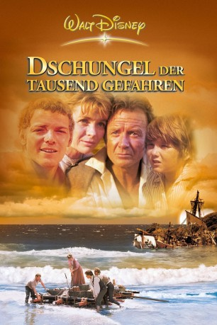

#9353 Dschungel der 1000 Gefahren
Alternativ: Swiss Family Robinson
 
 IMDB-Wertung: 7.2 / 10
IMDB-Wertung: 7.2 / 10  Metascore: 0
Metascore: 0 
Familie Robinson möchte aus der Schweiz nach Australien auswandern. Doch während ihrer Reise geraten sie in einen Sturm und stranden auf einer einsamen Insel. Nachdem vorerst kein Ausweg in Sicht ist müssen die Robinsons lernen, sich hier ums Überleben zu kümmern und bauen sich ein neues Zuhause. Eines Tages dann befreit die Familie schließlich ein Mädchen aus der Gewalt von Piraten und ihr Inselparadies ist in Gefahr durch diese zerstört zu werden...
Jahr: 1960
Dauer: 126 Minuten
FSK: 6
Land: USA Studio: Buena Vista DISTRIBUTION CO.,INC.Tonspuren: DD2.0 - ,
Untertitel: Englisch,
Auflösung: 1080p (1920x800) Größe: 11264 MB
Genre: Abenteuer, Familie
Regisseur: Ken Annakin
Drehbuch: Lowell S. Hawley
Soundtrack: William Alwyn
Darsteller:
 John Mills als Father
John Mills als Father- Dorothy McGuire als Mother
- James MacArthur als Fritz
- Janet Munro als Roberta
- Sessue Hayakawa als Kuala - Pirate Chief
- Tommy Kirk als Ernst
- Kevin Corcoran als Francis
 Cecil Parker als Captain Moreland
Cecil Parker als Captain Moreland Milton Reid als Big Pirate
Milton Reid als Big Pirate Larry Taylor als Battoo - Pirate
Larry Taylor als Battoo - Pirate- Andy Ho als Auban - Pirate
Datei: X:\1960\Dschungel der 1000 Gefahren (1960, FSK6, 1920x800).mkv seit 15.08.2018
Festplatte: HD 1900-1970
 Es gibt insgesamt 21 Filme in der Gruppe '1960'
Es gibt insgesamt 21 Filme in der Gruppe '1960'